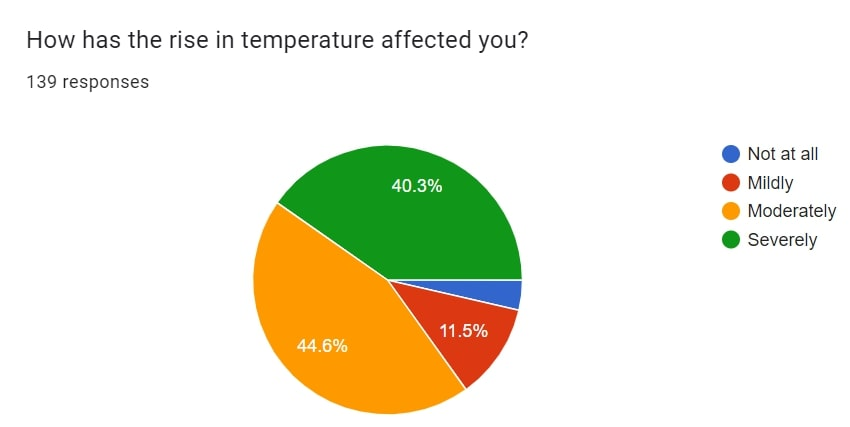

GROUP 10 Community Project: Rise In Temperature In Mumbai
Our Survey
The Survey conducted by our group was open during the second week of June. We were able to reach to 130 people using our contacts and spreading the form into the community. The questions asked within the survey were a result of 1 week of brainstorming of Ideas, and the most severe of the problems we mentioned would be chosen as our topic. They included the most major problems that you may find in the news such as local train overcrowding and flooding due to rain to some simpler topics such as electricity cuts and homeless people on the streets.
Survey Results
Our results were quite shocking to us, we were expecting the local train overcrowding issue to trump any and all problems by a large margin, however, while local train overcrowding was quite a big problem, it ranked 3rd in the list, trailing behind homelessness and of course, rise in temperature. The statistics of rise in temperature themselves was a shocking to us, with 40% of the respondents admitting being severely affected and 44% moderately. only around 15% said they were either mildly affected or not affected at all. As a result, this topic became our focus during the upcoming 2 months.
Survey Result
